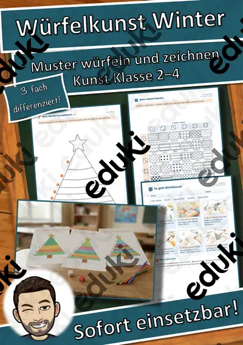

Technisches Zeichnen: Lerntheke zur Kabinettprojektion: 01 Würfel und Quader Zeichnen - Übungsaufgaben inkl. Lösung
KostenlosMaterial auf eduki ansehen
Lerntheke zur Kabinettprojektion: 01 Würfel und Quader Zeichnen - Übungsaufgaben inkl. Lösung
Weitere Arbeitsblätter zur Kabinettprojektion (Stufe/Abschrägung/Nut/Durchbruch) inkl. Übungsaufgaben und Lösungen sind aus dieser Reihe ebenfalls hier erhältlich. Über eine kleinen Beitrag für meine Kaffeekasse freue ich mich sehr: :) https://www.paypal.com/cgi-bin/webscr?cmd=_s-xclick&hosted_button_id=VQNS7ZDMJ83WY&source=url Danke!
FachKunst
Klasse–
SchulformMaterial ist unabhängig von Schultyp & Klassenstufen, z.B. Agenda für Elternabend
MaterialartUnterrichtsreihen, Arbeitsblätter, Stationenlernen, Mal- und Bastelvorlagen
Ähnliche Materialien

Flache Werkstücke - Abschrägung (auch Homeschooling) inkl. Video

Geometrische Körper - Steckbrief Quader - Mathe - Geometrie - Differenziert

Bemaßung nach Norm – Technisches Zeichnen Klasse 8/9 Mittelschule – Arbeitsheft mit Lösungen

Quader Lückentext mit Wortspeicher Hörverstehen und Suchsel

Kleines Einmaleins, Einmaleins Übungsaufgaben (auch Homeschooling)

Würfelkunst Winter – Tannenbaum-Muster erwürfeln und zeichnen, 3-fach differenziert (Klasse 2–4)

Geometrische Körper - Steckbrief Kegel - Mathe - Geometrie - Differenziert